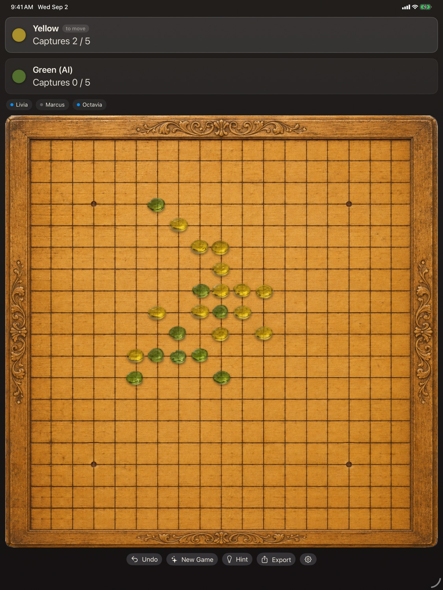
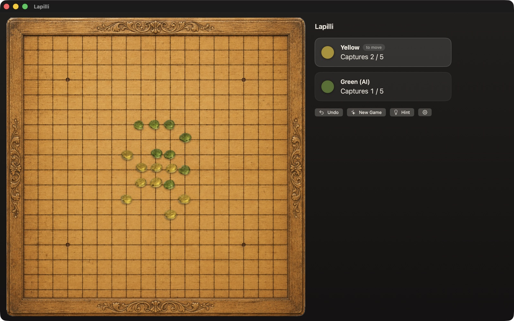
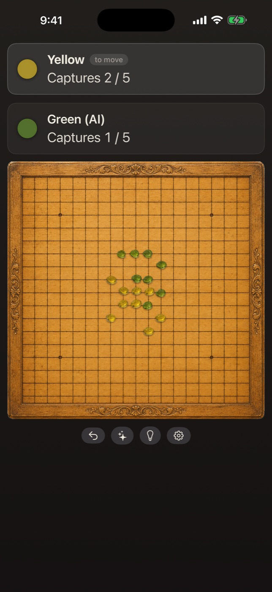
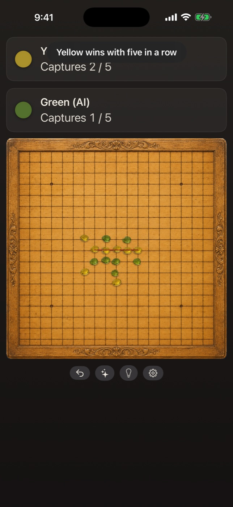

Fact sheet and assets for press and creators
Lapilli Stones is a hand-crafted digital board game of five-in-a-row and capture — glass stones on a carved Roman board, wrapped in an original story of a game buried by Vesuvius — for iPhone, iPad, and Mac in a single purchase, with no ads, no subscriptions, and no tracking.
The game is framed by an original work of historical fiction: glass drops from a Pompeii furnace, a scratched nineteen-line grid in the back of a thermopolium, and an eruption that preserved a game mid-play for two thousand years. The full story is the landing page. The game itself is the one the modern world knows as Pente — created by Gary Gabrel in 1977, its Keryo variant by champion Rollie Tesh in 1983 — presented under an original name because Pente® is Hasbro's registered trademark. The fiction is fiction, the game is real, and the landing page says both plainly.




Full-resolution screenshots for all devices, the app icon, and a complete asset bundle are available on request — write to lapilli-stones@proton.me and we'll send the kit the same day. A downloadable bundle will live on this page soon.
Promo codes are available for press and creators — just ask.